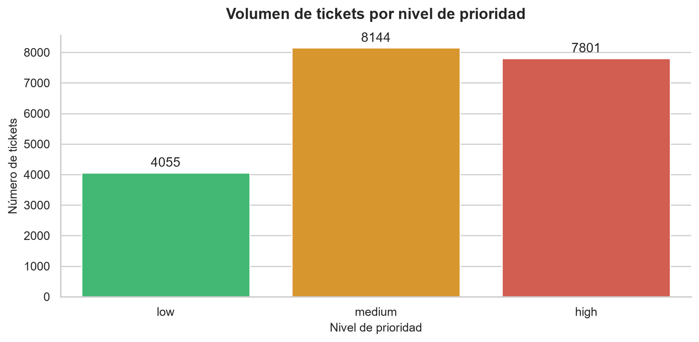
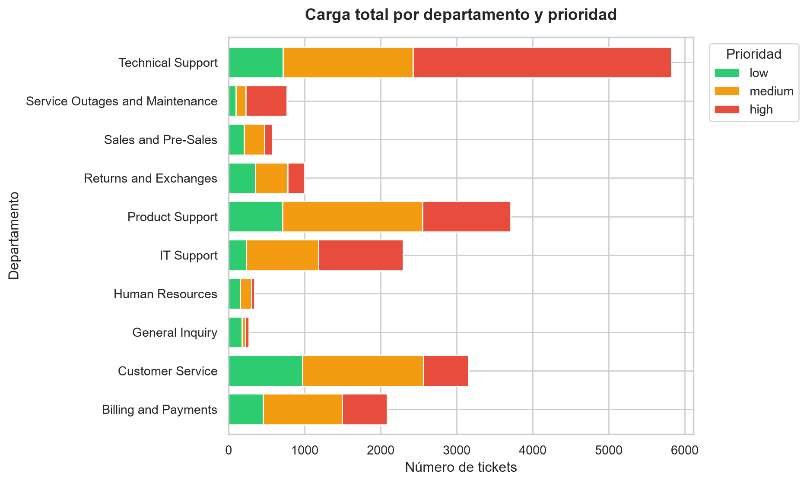

Grupo J: Victor, Mercedes, Alejandro y Christopher
1. Contexto y dataset
Para este proyecto hemos utilizado un dataset público de Kaggle con tickets de soporte técnico. El objetivo es analizar la carga de trabajo de un helpdesk desde la perspectiva de un administrador de sistemas: qué departamentos reciben más incidencias, qué prioridades predominan y qué tickets deberían atenderse primero.
queue: departamento o cola de soporte al que se asigna el ticket.
priority: prioridad del ticket.
type: tipo de incidencia, por ejemplo incidente, petición o problema.
language: idioma del ticket.
subject: asunto del correo o ticket.
2. Exploración inicial y limpieza
En este apartado cargamos el dataset y comprobamos su estructura, tipos de datos, valores nulos y distribución de las variables más relevantes.
import pandas as pdimport matplotlib.pyplot as pltimport seaborn as snsimport plotly.express as pxdf = pd.read_csv("dataset-tickets-multi-lang-4-20k.csv")print(f"El dataset tiene {df.shape} filas y {df.shape} columnas.")df.info()
print("Distribución de prioridades:")print(df["priority"].value_counts())print("\nDistribución por idioma:")print(df["language"].value_counts())print("\nDistribución por tipo de ticket:")print(df["type"].value_counts())
Distribución de prioridades:
priority
medium 8144
high 7801
low 4055
Name: count, dtype: int64
Distribución por idioma:
language
en 11923
de 8077
Name: count, dtype: int64
Distribución por tipo de ticket:
type
Incident 7978
Request 5763
Problem 4184
Change 2075
Name: count, dtype: int64
print("Valores nulos por columna:")print(df.isnull().sum())print("\nFilas duplicadas:")print(df.duplicated().sum())
Valores nulos por columna:
subject 1461
body 2
answer 4
type 0
queue 0
priority 0
language 0
tag_1 0
tag_2 46
tag_3 95
tag_4 1539
tag_5 6909
tag_6 12649
tag_7 16072
tag_8 18093
dtype: int64
Filas duplicadas:
0
Interpretación técnica: con info() comprobamos el tipo de datos y la existencia de valores nulos. Con describe() obtenemos un resumen estadístico general y con value_counts() vemos qué categorías predominan. Si hubiera duplicados o nulos en columnas relevantes, un administrador debería limpiarlos antes de analizar los datos para no distorsionar las métricas de carga del helpdesk.
3. Análisis avanzado con Pandas
3.1 Agrupación con groupby
Analizamos qué departamento recibe más tickets según el tipo de incidencia.
Interpretación técnica: el groupby agrupa los tickets por departamento y tipo. Después, size() cuenta cuántos tickets hay en cada grupo y unstack() convierte los tipos de ticket en columnas. Si un departamento concentra muchos incidentes, es un posible cuello de botella. Como acción, se podría reforzar ese equipo, redistribuir tickets o automatizar las consultas más repetitivas.
3.2 Tabla dinámica con pivot_table
Cruzamos la prioridad con el idioma para comprobar si los tickets urgentes se concentran en algún idioma.
Interpretación técnica: la pivot_table resume el número de tickets cruzando dos variables categóricas: prioridad e idioma. Cada celda indica cuántos tickets existen para esa combinación. Si los tickets de prioridad alta están concentrados en un idioma, el equipo de guardia debe contar con personal capaz de atenderlos sin retrasos.
3.3 Filtrado avanzado con loc
Aislamos los tickets más críticos: prioridad alta y tipo incidente.
Interpretación técnica:loc permite seleccionar filas que cumplen varias condiciones lógicas y, al mismo tiempo, elegir solo las columnas que nos interesan. Estos tickets representan los casos que un SysAdmin debería revisar primero al iniciar su turno, porque combinan alta urgencia con un incidente.
3.4 Combinación de datos con concat
Aunque trabajamos con un único dataset, dividimos los tickets por idioma y los volvemos a unir para demostrar el uso de concat.
df_ingles = df[df["language"] =="en"]df_aleman = df[df["language"] =="de"]df_combinado = pd.concat([df_ingles, df_aleman])print(f"Tickets en inglés: {len(df_ingles)}")print(f"Tickets en alemán: {len(df_aleman)}")print(f"Tickets combinados: {len(df_combinado)}")df_combinado.head()
Tickets en inglés: 11923
Tickets en alemán: 8077
Tickets combinados: 20000
subject
body
answer
type
queue
priority
language
tag_1
tag_2
tag_3
tag_4
tag_5
tag_6
tag_7
tag_8
1
Customer Support Inquiry
Seeking information on digital strategies that...
We offer a variety of digital strategies and s...
Request
Customer Service
medium
en
Feedback
Sales
IT
Tech Support
NaN
NaN
NaN
NaN
2
Data Analytics for Investment
I am contacting you to request information on ...
I am here to assist you with data analytics to...
Request
Customer Service
medium
en
Technical
Product
Guidance
Documentation
Performance
Feature
NaN
NaN
4
Security
Dear Customer Support, I am reaching out to in...
Dear [name], we take the security of medical d...
Request
Customer Service
medium
en
Security
Customer
Compliance
Breach
Documentation
Guidance
NaN
NaN
5
Concerns About Securing Medical Data on 2-in-1...
Inquiring about best practices for securing me...
Thank you for your concern regarding securing ...
Request
Technical Support
medium
en
Security
Product
Feature
IT
Tech Support
NaN
NaN
NaN
7
Problem with Integration
The integration stopped working unexpectedly, ...
I will look into the problem and call you at <...
Problem
IT Support
high
en
Technical
Integration
Bug
Resolution
Outage
Documentation
NaN
NaN
Interpretación técnica:concat une dos DataFrames verticalmente. En este caso separamos los tickets por idioma para poder analizarlos por partes y después los reunimos. Esta técnica sería útil si tuviéramos varios archivos de logs o tickets y quisiéramos construir un histórico único.
4. Visualizaciones
4.1 Gráfico estático: prioridad de los tickets
orden_prioridad = ["low", "medium", "high"]conteo = df["priority"].value_counts().reindex(orden_prioridad)colores = {"low": "#2ecc71","medium": "#f39c12","high": "#e74c3c"}plt.figure(figsize=(9, 4.5))sns.set_theme(style="whitegrid")ax = sns.barplot( x=conteo.index, y=conteo.values, hue=conteo.index, palette=colores, legend=False)ax.set_title("Volumen de tickets por nivel de prioridad", fontsize=14, fontweight="bold", pad=15)ax.set_xlabel("Nivel de prioridad", fontsize=11)ax.set_ylabel("Número de tickets", fontsize=11)for contenedor in ax.containers: ax.bar_label(contenedor, padding=3)sns.despine()plt.tight_layout()plt.show()

Distribución de tickets por nivel de prioridad
Interpretación técnica: este gráfico muestra cómo se reparte la carga según la urgencia. Si predominan los tickets de prioridad media o alta, el equipo necesita un sistema claro de triaje para atender primero las incidencias críticas.
4.2 Gráfico estático: mapa de calor
df_apilado = ( df.groupby(["queue", "priority"]) .size() .unstack(fill_value=0) .reindex(columns=["low", "medium", "high"]))colores = ["#2ecc71", "#f39c12", "#e74c3c"]df_apilado.plot( kind="barh", stacked=True, color=colores, figsize=(10, 6), width=0.8)plt.title("Carga total por departamento y prioridad", fontsize=14, fontweight="bold", pad=15)plt.xlabel("Número de tickets")plt.ylabel("Departamento")plt.legend(title="Prioridad", bbox_to_anchor=(1.02, 1), loc="upper left")plt.tight_layout()plt.show()

Carga total por departamento, desglosada por prioridad
Interpretación técnica: el mapa de calor facilita detectar de un vistazo qué combinación de departamento y tipo de ticket genera más trabajo. Las celdas más oscuras o rojas indican mayor carga operativa y, por tanto, posibles áreas donde aplicar automatización o más personal.
4.3 Gráfico interactivo con Plotly
df_plotly = ( df.groupby(["queue", "priority"]) .size() .reset_index(name="cantidad"))fig = px.bar( df_plotly, x="queue", y="cantidad", color="priority", barmode="group", template="plotly_white", category_orders={"priority": ["low", "medium", "high"]}, color_discrete_map={"low": "#2ecc71","medium": "#f39c12","high": "#e74c3c" }, title="<b>Distribución interactiva de carga por departamento y prioridad</b>")fig.update_layout( xaxis_title="Departamento", yaxis_title="Número de tickets", legend_title="Prioridad", font=dict(family="Arial", size=12), hovermode="x unified")fig.show()
Carga interactiva por departamento y prioridad
Interpretación técnica: este gráfico interactivo permite comparar la carga de cada departamento según la prioridad. Al ser interactivo, se pueden ocultar categorías, ver valores exactos al pasar el ratón y analizar mejor qué equipos necesitan refuerzo.
5. Conclusiones
Carga operativa: el análisis con groupby permite identificar el departamento con más tickets e incidentes. Ese sería el principal candidato para recibir más recursos o automatización.
Priorización: el filtrado con loc permite crear una lista de tickets críticos que deberían atenderse primero en cada turno.
Idiomas y guardias: la pivot_table muestra la relación entre prioridad e idioma. Si hay muchos tickets urgentes en inglés, el personal de guardia debería tener un nivel adecuado de ese idioma.
Automatización: los tickets repetitivos y de baja prioridad podrían resolverse con respuestas automáticas, base de conocimiento o chatbots, reduciendo la carga del soporte técnico.
Monitorización: este tipo de análisis puede convertirse en un panel de control periódico para detectar aumentos anómalos de incidencias y actuar antes de que afecten al servicio.
Referencias técnicas
Pandas User Guide: https://pandas.pydata.org/docs/user_guide/
Seaborn: set_theme(), barplot() y heatmap(): https://seaborn.pydata.org/
Plotly Python: plantillas y colores discretos: https://plotly.com/python/templates/ y https://plotly.com/python/discrete-color/
Matplotlib: ajuste de márgenes con tight_layout(): https://matplotlib.org/stable/api/_as_gen/matplotlib.pyplot.tight_layout.html